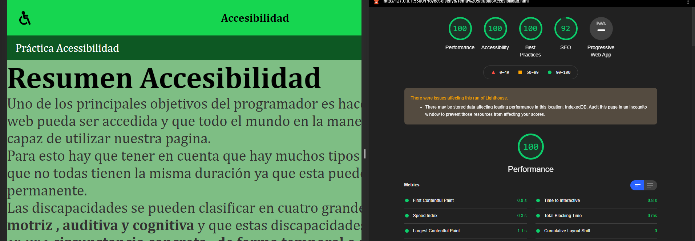
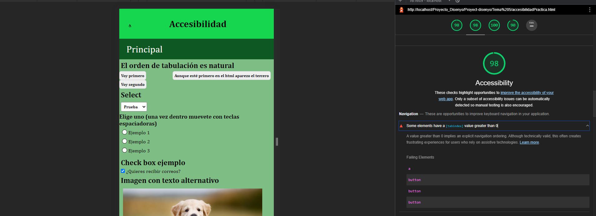
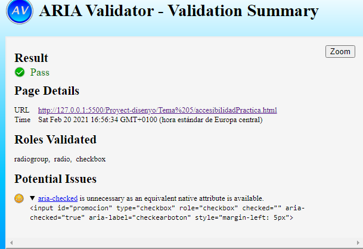

Test de accesibilidad en la página principal tenemos el 100%

Test de accesibilidad en la página donde tenemos los ejemplos tenemos prácticamente el 100% aunque nos baja
algo por haber
usado el tab index para mostrar que podemos modificar el orden aunque por html aparezca otro primero

Test de ARIA: solo me da un pequeño error en aria-checked ya que no seria del todo necesario pero la utilice
para el script de que se marque
